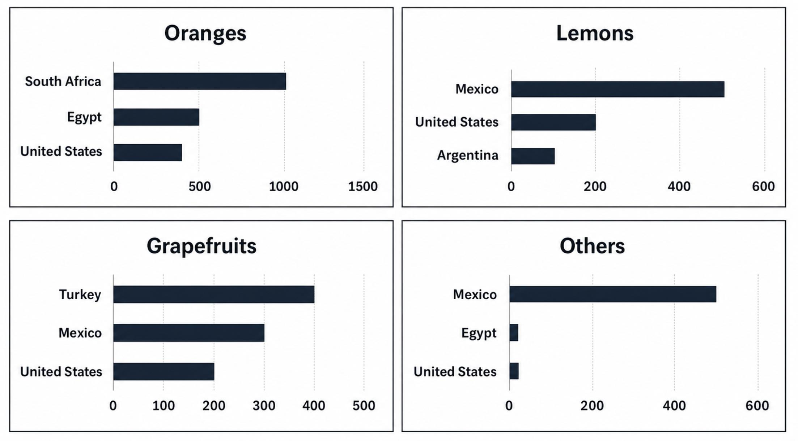

Article
Read the article, then confirm below to continue.
Is Homework Necessary?
Education, equity, and the century-long debate over how much homework students should really be given.
📄 Open articleComprehension & vocab
Questions on the article you just read, plus ten key words from it.
Comprehension
1. According to the article, how does homework disproportionately affect students?
2. What percentage of students in the study named homework as their primary source of stress?
3. According to the OECD, after how many hours of homework per week does extra time have little additional benefit?
4. Who first introduced the concept of homework to America?
5. What happened to mandatory homework policy in 1986?
6. According to the article, what should teachers focus on when setting homework?
Vocabulary
Reading Passage 3
Open the test in a new tab, complete it, then come back here.
The Strange World of Sight
Multiple choice, True/False/Not Given, and summary completion (Q27–40).
📖 Open reading passageWriting Task 1: the article
Background reading on citrus fruit exports — study the highlighted language before you write.
■ subject synonyms ■ numerical language ■ useful Task 1 chunks
From Grove to Global Market: How Countries Compete in Citrus Fruit Exports
The global trade in citrus produce is worth tens of billions of dollars annually, yet it is dominated by a small number of exporting nations. What is immediately striking is that the leading exporters differ considerably depending on the fruit category — a country that dominates orange exports may barely feature in the lemon or grapefruit markets.
Of all citrus commodities, oranges represent by far the largest volumes traded internationally. South Africa has become one of the world's leading orange exporters, consistently shipping well over a thousand thousand tonnes. Egypt also features among the top exporters, though its shipments are noticeably lower than South Africa's. By contrast, the United States ranks considerably below both African nations.
What the data reveal, however, is that the rankings shift considerably for other citrus types. In the lemon trade, Mexico emerges as the clear leader, outpacing both the United States and Argentina. Grapefruits present yet another picture: Turkey ranks at the very top, with volumes substantially higher than Mexico or the United States. It is worth noting that Turkey is rarely among the top exporters in the other three categories.
The most notable pattern of all is the dominance of Mexico across multiple categories — it appears in three of the four charts. Overall, the picture that emerges is one of specialisation: each exporting nation tends to concentrate its trade in one or two varieties, with Mexico as the notable exception.
Task 1 report
Mini exam block — write your response with the stopwatch running.
The graphs below show four categories of citrus fruits and the top three countries to which these were exported (in thousand tonnes) in 2012. Summarise the information by selecting and reporting the main features, and make comparisons where relevant. Write at least 150 words.

Sample answer
Model response, with useful comparison language marked.
The bar charts illustrate three leading countries importing four types of citrus fruits — oranges, lemons, grapefruits, and 'others' — in 2012, measured in thousand tonnes.
Overall, oranges had the highest total export volume, led by South Africa. Mexico was the dominant importer of lemons and citrus fruits in the 'others' category. It is also clear that the United States was the only country represented in all four fruit groups, though its contribution remained relatively moderate.
In terms of orange exports, South Africa had the highest import volume with 1,000 thousand tonnes, followed by Egypt at 500 and the United States at approximately 450 thousand tonnes. This made oranges the most traded citrus fruit overall, with nearly double the volume of grapefruits, the next highest category.
The total volume of grapefruit imports among the top three countries reached 900 thousand tonnes. Turkey led with 400 thousand tonnes, followed by Mexico and the United States with 300 and 200 thousand tonnes, respectively. These figures placed grapefruits ahead of lemons and other citrus fruits in terms of overall volume.
Lemon imports were highest from Mexico, at roughly 500 thousand tonnes, more than twice the import volume of the United States (200). Argentina ranked third with about 100 thousand tonnes. In the 'others' category, Mexico again took the lead with around 500 thousand tonnes, while Egypt and the United States imported a negligible amount of 10 thousand tonnes each.
Speaking — Parts 1, 2 & 3
A full speaking simulation: 5 warm-up questions, one cue card, then 3 follow-up questions. You only get one attempt per question, so make sure you're ready before you start recording.
Part 1 — Gifts
Answer each question directly — no cue card for this part.
- "A common gift would be…"
- "People often give…"
- "It really depends on the occasion, but typically…"
- "Traditionally, … is a popular choice"
- "The best gift I've ever received was…"
- "It really stood out because…"
- "I still treasure it because…"
- "What made it special was…"
- "I usually give…"
- "It depends on who I'm buying for, but…"
- "For close friends, I tend to…"
- "I like to give something personal, like…"
- "Just recently, I got…"
- "Not long ago, I received…"
- "It was a complete surprise because…"
- "I got it for my birthday / a special occasion"
- "We usually consider…"
- "It often comes down to the person's interests…"
- "People tend to think about…"
- "A good gift usually reflects…"
Part 2 — Cue Card
You should say:
🔵 what it is
🔵 how you can get this job
🔵 what kinds of work you would do for the job
🔵 explain why you want to have it
- "The job I'd love to have is…"
- "To get into this field, you'd typically need to…"
- "On a day-to-day basis, I'd be doing things like…"
- "The main reason I want this job is…"
Part 3 — Discussion
- "Children tend to be drawn to jobs that involve…"
- "A common example would be…"
- "Younger children often say they want to be…"
- "It's usually linked to what they see around them"
- "One way is to…"
- "It often involves a process of trial and error…"
- "People can also benefit from…"
- "Self-reflection plays a big role in…"
- "Several factors come into play, such as…"
- "Salary is obviously one consideration, but…"
- "Work-life balance is increasingly important…"
- "People should also think about…"
Video & comprehension
Watch, then answer the questions below.
1. According to the video, why is sleep more than just a way to rest?
2. What percentage of new material do people normally forget within the first twenty minutes?
3. What is the forgetting curve?
4. What is memory consolidation?
5. Which part of the brain plays a major role in consolidating long-term declarative memories?
6. What happened to H.M. after his hippocampus was removed?
7. Which type of memory includes facts and concepts needed for a test?
8. Which type of sleep is particularly associated with the consolidation of procedural memory?
9. According to the video, why can emotionally intense experiences sometimes be remembered better?
10. What does the video ultimately suggest about studying before an important test or performance?
Listening Section 3
Open the test in a new tab, complete it, then come back here.
Full Listening Test
Sections 1–4, 40 questions total. Complete whichever section your teacher assigns.
🎧 Open listening test